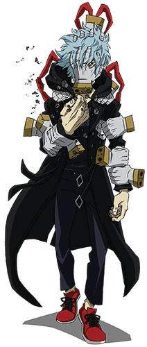
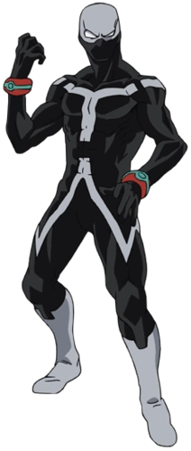
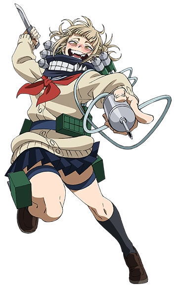
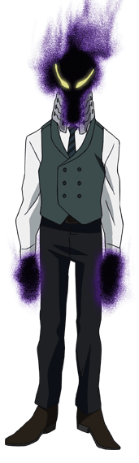
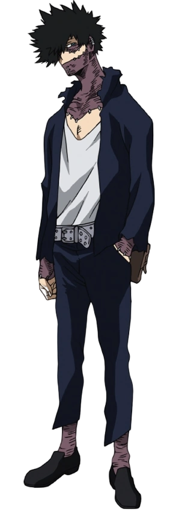
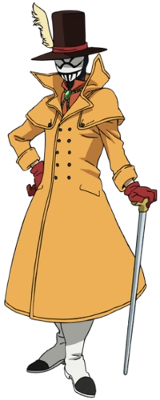
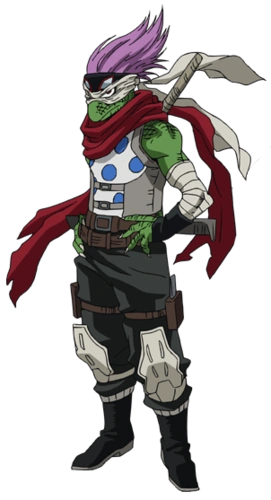

Don: Deterioro. Puede desintegrar todo lo que toque con sus cinco dedos.
Tomura Shigaraki (Tenko Shimura):
Don: Deterioro. Puede desintegrar todo lo que toque con sus cinco dedos.
Afiliación: Liga de Villanos
Cumpleaños: 4/4
Altura: 175 cm
Tipo de sangre: Desconocido
Le gusta: Desconocido

Don: Doble. Puede crear hasta dos copias de lo que sea al mismo tiempo, también puede duplicarse a sí mismo.
Twice (Jin Bubaigawara):
Don: Doble. Puede crear hasta dos copias de lo que sea al mismo tiempo, también puede duplicarse a sí mismo.
Afiliación: Liga de Villanos
Cumpleaños: 5/10
Altura: 178 cm
Tipo de sangre: Desconocido
Le gusta: Desconocido

Don: Transformación. Al ingerir la sangre de alguien, esta puede transformarse en ellos.
Himiko Toga:
Don: Transformación. Al ingerir la sangre de alguien, esta puede transformarse en ellos.
Afiliación: Liga de Villanos
Cumpleaños: 8/7
Altura: 157 cm
Tipo de sangre: Desconocido
Le gusta: Desconocido

Don: Portal. Puede producir una niebla oscura que teletransporta todo lo que entre en contacto con ella.
Kurogiri (Oboro Shirakumo):
Don: Portal. Puede producir una niebla oscura que teletransporta todo lo que entre en contacto con ella.
Afiliación: Liga de Villanos
Cumpleaños: 5/5
Altura: 187 cm
Tipo de sangre: Desconocido
Le gusta: Desconocido

Don: Llamas azules. Puede crear llamas azules en cualquier parte de su cuerpo que son capaces de incinerar.
Dabi (Touya Todoroki):
Don: Llamas azules. Puede crear llamas azules en cualquier parte de su cuerpo que son capaces de incinerar.
Afiliación: Liga de Villanos
Cumpleaños: 1/18
Altura: 176 cm
Tipo de sangre: Desconocido
Le gusta: Desconocido

Don: Comprimir. Puede comprimir cualquier cosa que toque en un área esférica del tamaño de una canica.
Mr. Compress (Atsuhiro Sako):
Don: Comprimir. Puede comprimir cualquier cosa que toque en un área esférica del tamaño de una canica.
Afiliación: Liga de Villanos
Cumpleaños: 10/8
Altura: 181 cm
Tipo de sangre: Desconocido
Le gusta: Ser lo más llamativo y entretenido posible

Don: Lagartija. Puede adherirse a las paredes como una lagartija.
Spinner (Shuichi Iguchi):
Don: Lagartija. Puede adherirse a las paredes como una lagartija.
Afiliación: Liga de Villanos
Cumpleaños: 8/8
Altura: 174 cm
Tipo de sangre: Desconocido
Le gusta: Juegos